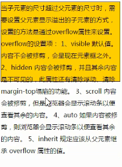

当子元素的尺寸超过父元素的尺寸时，需要设置父元素显示溢出的子元素的方式，设置的方法是通过overlow属性来设置。
overflow的设置项：
- visible默认值。内容不会被修剪，会呈现在元素框之外。
- hidden内容会被修剪，并且其余内容是不可见的，此属性还有清除浮动、清除margin-top塌陷的功能。
- scroll内容被会修剪，但是浏览器会显示滚动条以便查看其余内容。
- auto如果内容被修剪，则浏览器会显示滚动条以便查看其余内容。
- inherit规定应该从父元素继承overflow属性的值
元素溢出示例：
